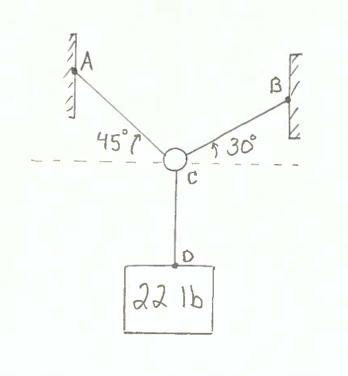
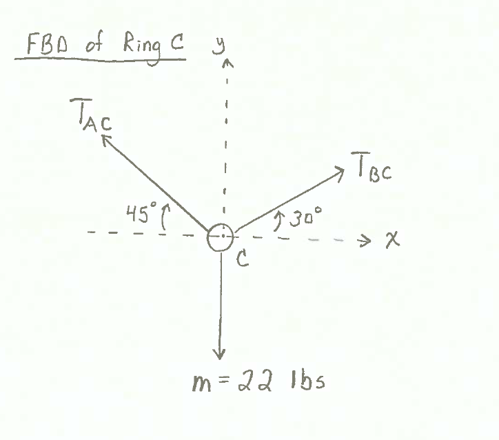

SymPy (http://www.sympy.org) is a Python library for symbolic math.
In symbolic math, symbols represent mathematical expressions. In a numerical calculation, the value of pi is stored as an estimate of pi, a floating point number close to 3.14.... In a symbolic math expression, the value of pi is an exact value.
SymPy can be used to solve two equations for two unknowns. Consider the set of two equations containing two variables below:
To solve this system of two equations for the two unknows $x$ and $y$, first the SymPy package needs to be imported. From the SymPy package, we'll use the functions symbols(), Eq(), and solve().
import numpy as np
from sympy import symbols, Eq, solve
Next, we create two SymPy symbols objects, $x$ and $y$. Note, the string passed as an argument to the symbols() function, 'x y', does not have any commas. The outputs of the symbols() function are the two symbols objects x and y. These outputs must be separated by a comma and are not surrounded by quotes.
Be careful with syntax when you create SymPy symbols objects.
x, y = symbols('x y')
Now we define the two equations as SymPy equation objects using SymPy's Eq equation class. Equations in SymPy are assumed to be equal to zero. Both of our equations are equal to zero, so no modification is necessary before we pass the equations into Eq(). If the equations were not equal to zero, we would simply subtract the term on the right hand side of the equals sign from both sides of the equation. The subtraction opperation will result in an equation equal to zero.
eq1 = Eq(x + y - 5)
eq2 = Eq(x - y + 3)
After the symbols and equations are defined, we can use SymPy's solve() function to compute the value of $x$ and $y$. The first argument passed to the solve() function is a tuple of the two equations (eq1, eq2). The second argument passed to the solve() function is a tuple of the variables we want to solve for (x, y).
solve((eq1,eq2), (x, y))
The solution is stored in a Python dictionary. The dictionary keys are the symbols objects (the variables), and the dictionary values are the numerical solution. We can access the solutions in the dictionary using regular Python dictionary access syntax: dict[key].
sol_dict = solve((eq1,eq2), (x, y))
print(f'x = {sol_dict[x]}')
print(f'y = {sol_dict[y]}')
SymPy can be used to solve engineering problems. Consider the following engineering statics problem:
GIVEN:¶
A mass of 22 lbs is hung from a ring. The ring is supported by two cords, cord AC is 45 degrees above the horizontal to the left, and cord BC is 30 degrees above the horizontal to the right .
$m$ = 22 lb
$T_{AC}$ @ +45 degrees CW relative to -x-axis
$T_{BC}$ @ +30 degress CCW relative to +x-axis

FIND:¶
The magnitude of tension in the cords AC and BC. ($T_{AC}$ and $T_{BC}$)
SOLUTION:¶
After constructing a Free Body Diagram of ring C, we see three forces acting on ring C:
- One force from cord AC, which we call $T_{AC}$.
- The second force is from cord BC, which we call $T_{BC}$.
- The third and final force acting on ring C is the force from cord CD, which is due to the box hanging straight down and equal to 22 lbs, which we call $m$.

To solve for the magnitude of $T_{AC}$ and $T_{BC}$, we need to solve two equations for two unknowns. To accomplish this with SymPy, first we need to import sympy and the functions symbols, Eq and solve.
from sympy import symbols, Eq, solve
Next, we'll define the symbolic math variables (that will be used in the equations) as SymPy symbols objects. Multiple symbolic math variables can be defined at the same time. Note the argument names (on the right-hand side of the assignment operator =) need to be enclosed in quotes' ' and separated by spaces, no commas. The object names (on the left-hand side of the assignment operator =) are separated with commas, no quotes.
Tac, Tbc = symbols('Tac Tbc')
Next, two equations based on the sum of the forces in the x and y directions need to be defined. Assuming ring C is in static equilibrium:
$$ \Sigma \vec{F} = 0 $$$$ \Sigma F_{x} = 0 $$$$ \Sigma F_{y} = 0 $$The three forces operating on the ring are defined as:
$$ {T_{ac}} = tension \ in \ cable \ AC \ $$$$ \vec{T_{ac}} = - T_{ac} cos(45)\hat{i} + T_{ac} sin(45)\hat{j} $$$$ {T_{bc}} = tension \ in \ cable \ BC $$$$ \vec{T_{bc}} = T_{bc} cos(30)\hat{i} + T_{bc} sin(30)\hat{j} $$$$ \vec{m} = 0 \hat{i} - 22 \hat{j} $$Taking $\Sigma F_{x} = 0$ (sum of the $\hat{i}$ terms) produces:
$$ - T_{ac} cos(45) + T_{bc} cos(30) = 0 $$Taking $\Sigma F_{y} = 0$ (sum of the $\hat{j}$ terms) produces:
$$ T_{ac} sin(45) + T_{bc} sin(30) - 22 = 0 $$Our first equation, based on the sum of the forces in the x-direction (the $\hat{i}$ terms) is:
$$ - T_{ac} cos(45) + T_{bc} cos(30) = 0 $$This equation can be represented as a Sympy equation object. Note the right-hand side of the equation is equal to 0. Sympy equation objects are instantiated with expressions equal to zero. If the expression on the left-hand side of the equation was not equal to zero, we would simply subtract both sides of the equation by the term on the right-hand side of the equals sign, then use the resulting expression (equal to zero) to create the Sympy equation object.
eq1=Eq(-Tac*np.cos(np.radians(45)) + Tbc*np.cos(np.radians(30)))
print(eq1)
The second equation is based on the sum of the forces in the y-direction:
$$ T_{ac} sin(45) + T_{bc} sin(30) - 22 = 0 $$We'll define this second equation as a SymPy equation object as well:
eq2=Eq(Tac*np.sin(np.radians(45)) + Tbc*np.sin(np.radians(30))-22)
print(eq2)
Finally, to solve the two equations for the two unknowns, $T_{ac}$ and $T_{bc}$, we use SymPy's solve() method. The first argument passed to solve() is a tuple of the equations we want to solve (eq1, eq2), the second argument passed to solve() is a tuple of the variables we want to solve for (Tac, Tbc).
solve((eq1, eq2),(Tac, Tbc))
The solution is saved in a Python dictionary. The dictionary keys are the variable names, and the dictionary values are the numeric solution. Note, when we access the solution dictionary, we need to use the SymPy symbol object names Tac and Tbc as the dictionary keys (as compared to using the strings 'Tac' and 'Tbc' as the dictionary keys).
sol_dict = solve((eq1,eq2), (Tac, Tbc))
print(f'Tac = {round(sol_dict[Tac],1)} lb')
print(f'Tbc = {round(sol_dict[Tbc],1)} lb')
Summary¶
SymPy is a Python package for symbolic math. In this post, we solved a system of two equations for two unknows using SymPy. To do this, we created SymPy symbols objects and put these symbol objects into SymPy equation objects. We used SymPy's solve() method to calculate the solution. The solution is stored in a Python dictionary where the keys are the SymPy symbols objects and the values are the numeric solution.